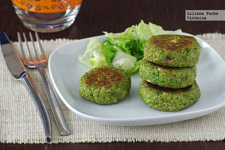

Welcome to Recetas de comida rapida
10 recetas de comida rápida (pero muy saludable) | PequeRecetas
2021.12.16 15:47Recetas para bebés y niños Recetas para bebés Recetas para niños Recetas familiares Recetas para cenas rápidas Recetas para fiestas infantiles Menús semanales para niños Alimentacion para bebes y niños y alimentación infantil Concursos y Sorteos Recetas para bebés, niños y toda la familia Recetas de Navidad Recetas Thermomix Suscribete al Newsletter
Cigalas a la plancha (receta FÁCIL en 10 minutos)
Galletas de Té Matcha navideñas (con forma de Árbol de Navidad)
Las mejores FREIDORAS SIN ACEITE (para freír de forma saludable)
Stollen (receta tradicional de pan de Navidad alemán)
101 IDEAS DE REGALOS para niños y niñas de 8 a 12 años
PequeRecetas Recetas 10 recetas de comida rápida (pero muy saludable)10 recetas de comida rápida (pero muy saludable)
Pin It Por Pequerecetas | 5 votos CargandoLa comida rápida se asocia al fast food cuya percepción no suele ser buena (hamburguesas, pizzas, fritos ), pero se puede preparar comida rápida y sana , y hoy os lo vamos a demostrar con estas recetas de comida casera fácil que puedes preparar en poco tiempo, sin dejar de disfrutar de un plato completo y saludable .
¿Quién dice que una hamburguesa , un sándwich o los bocadillos no pueden ser sanos? Lo importante es contar con ingredientes de calidad, que combinen proteínas con hidratos de carbono para poder hacer un plato rápido si un día disponemos de poco tiempo para comer.
INDICE DE CONTENIDOS
Hamburguesa de salmón Poké Bowl Sándwich Club Quesadillas sincronizadas de jamón y queso Hamburguesa de pollo Sándwich vegetal Keftas con salsa de yogur Sándwich de pollo con salsa barbacoa Hamburguesa de alubias blancas Chimichanga mexicanoHamburguesa de salmón
Estas hamburguesas de salmón son una versión muy saludable de las clásicas hamburguesas, aunque si preparas estas últimas de forma casera también pueden ser una opción perfecta. En esta ocasión sin embargo hemos optado por una versión con salmón, para disfrutar de todas las ventajas de este pescado azul. Otra opción deliciosa es la hamburguesa de bacalao , o la hamburguesa de atún , también comidas rápidas pero muy saludables.
Hamburguesas de salmón
Poké Bowl
Si prefieres una versión de comida sana con ensalada pero que resulte completa, te recomendamos el poké bowl hawaiano , tan de moda actualmente. Si además dejas cocido el arroz lo tendrás listo en pocos minutos, disfrutando de una comida rápida y muy completa.
Receta de Poké Bowl hawaiano [muy sano]
Sándwich Club
Un club sándwich es una comida rápida que combina las proteínas del pollo, con verduras e hidratos de carbono, además de estar delicioso y ser perfecto para comer algún día que tengas poco tiempo.
Sándwich Club (receta FÁCIL del mejor sándwich de pollo)
Quesadillas sincronizadas de jamón y queso
Estas sincronizadas de jamón y queso son la versión mexicana de una comida rápida, y también nos pueden solucionar un día en el que tengamos poco tiempo y queramos comer algo rico y fácil.
Sincronizadas de jamón y queso (receta tradicional mexicana)
Hamburguesa de pollo
Si necesitas preparar una comida rápida para los peques apuesta por esta hamburguesa de pollo casera ¡éxito seguro!
Hamburguesas de Pollo ¡deliciosas y sanas!
Sándwich vegetal
El sándwich vegetal es una idea para comer de forma ligera y sana. Disfruta de alguna de estas opciones que te damos:
Sándwich vegetal, 5 ideas para tomar nota
Keftas con salsa de yogur
Los keftas son una especie de albóndigas con especias, típicas de Oriente Medio. Puedes aderezarlas en pocos minutos y hacerlas a la plancha, acompañadas de salsa de yogur, para acompañarlas de una ensalada por ejemplo.
Keftas o koftas (receta tradicional con salsa de yogur)
Sándwich de pollo con salsa barbacoa
Si te ha sobrado pollo asado es buena idea guardar los restos, porque con ellos puedes hacer un sándwich de pollo con salsa barbacoa que resulta ligero y sano y te permitirá disfrutar de una comida en pocos minutos.
Sandwich de pollo con salsa barbacoa
Hamburguesa de alubias blancas
La hamburguesa de alubias blancas es otra versión muy saludable de la clásica hamburguesa. Con ella consumirás legumbres, tan importantes en nuestra dieta mediterránea.
Hamburguesas de alubias blancas con pan casero
Chimichanga mexicano
La chimichanga es una receta mexicana que consiste en un burrito frito, relleno de carne picada. Si tienes tortillas de maíz en casa ya tienes comida rápida.
Receta de CHIMICHANGA mexicana, ¡burritos fritos!
Esperamos haberte dado ideas de comidas rápidas y fáciles para esos días en que uno no tiene tiempo de meterse en la cocina.
Deja un comentario Cancelar respuesta
Este sitio usa Akismet para reducir el spam. Aprende cómo se procesan los datos de tus comentarios .
Por edades
A partir de 6 meses A partir de 9 meses A partir de 1 año Recetas familiaresRecetas diarias
Menús semanales Desayunos Aperitivos y tapas Comidas Postres Meriendas Cenas rápidas BebidasRecetas especiales
Recetas para celiacos Recetas sin leche Recetas sin huevoPor ocasiones
Fiestas y cumpleaños Recetas de Carnaval Recetas de Navidad Recetas de HalloweenPor categoria
Arroz Carnes Cremas y Purés Dulces Ensaladas Frutas Huevos Legumbres Pan y masas Pasta Patatas Pescado Pollo Sandwiches Sopas Tartas VerdurasPor técnica
Thermomix Olla express Guisos MicroondasLo más buscado
Por categoría
Recetas de postres Recetas de pollo Recetas de arroz Recetas de ensaladas Recetas de pescado Recetas de bizcochosLas más buscadas
Crema de calabaza Pollo al horno Croquetas Crema de calabacin Albondigas en salsa Berenjenas rellenasCenas rápidas
Pastel de verduras Ensalada de pasta Hamburguesas caseras Ensaladilla rusa Macarrones con chorizo Tortilla de espinacasRepostería y dulces
Bizcocho de yogur Brownies Tarta de queso Bizcocho de chocolate Tarta de manzana Tarta tres chocolatesAlimentación
Quinoa Jengibre Semillas de Chía Kiwi Curcuma Maca andina @Copyright 2020, Kidealia Media SL Contacto Publicidad Política de Privacidad y Aviso Legal Política de Cookies Condiciones de uso